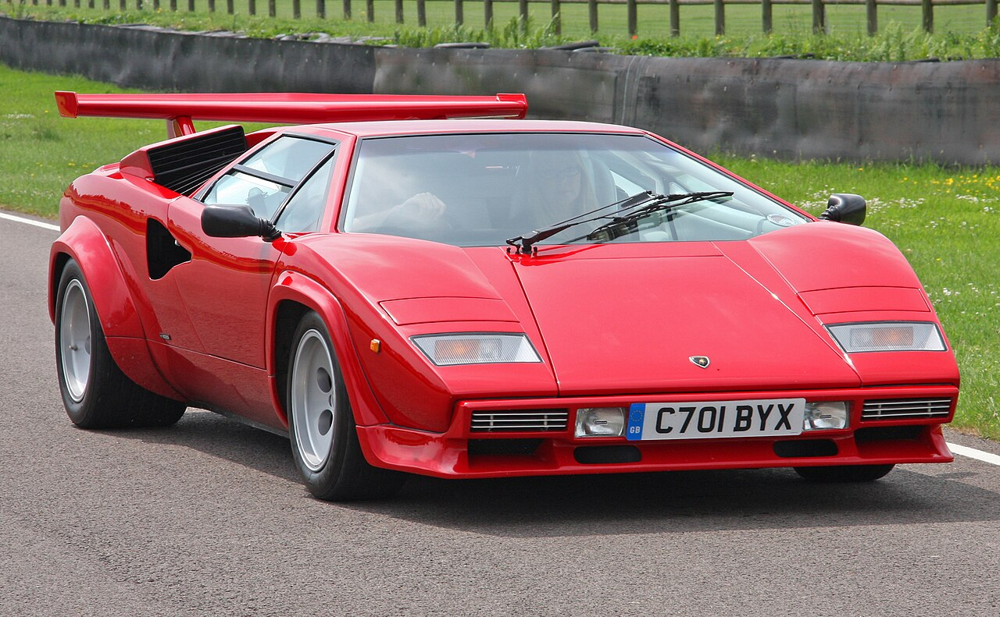

Hello!
Welcome to car wiki
This is the Lamborghini Countach page!
Here you'll learn about the Lamborghini Countach!

Basic Info:
- Engine Capacity: 3.9 to 5.2 liters
- Horsepower: Between 375 and 455 HP
- Maximum Speed: 158 mph in early models to 221 mph in modern, limited-production variants
- Manufacture: 1974 to 1990
YouTube Video & Audio:
Navigation:
This is not an actual wiki you could learn information off of.